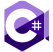

Murilo Lobos
Estudante (Desenvolvimento Web)
2001
Nasceu em Espirito Santo, Brasil.
2017
Se formou no ensino médio.
Começou a aprender suas primeiras linguagens de programação.
Começou a aprender suas primeiras linguagens de programação.
2019
Começou a trabalhar na empresa Lucas Solutions como um programador junior em C#.
2020
Começou a trabalhar na empresa VisionTI como Técnico de Teleinformática.
2021
Iniciou o curso de Análise e Desenvolvimento de Sistemas na Universidade de Vila Velha (UVV).
HTML5
Typescript

C#
Bash Shell
Linux
ReactJS
 Multicode
Multicode